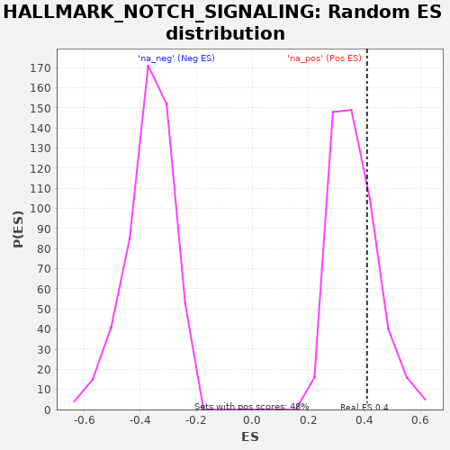

| | | Dataset | deseq_res_for_gsea |
| Phenotype | NoPhenotypeAvailable |
| Upregulated in class | na_pos |
| GeneSet | HALLMARK_NOTCH_SIGNALING |
| Enrichment Score (ES) | 0.40900528 |
| Normalized Enrichment Score (NES) | 1.125741 |
| Nominal p-value | 0.24634655 |
| FDR q-value | 0.58196646 |
| FWER p-Value | 0.975 |
Table: GSEA Results Summary
 Fig 1: Enrichment plot: HALLMARK_NOTCH_SIGNALING
Fig 1: Enrichment plot: HALLMARK_NOTCH_SIGNALING
Profile of the Running ES Score & Positions of GeneSet Members on the Rank Ordered List
| PROBE | GENE SYMBOL | GENE_TITLE | RANK IN GENE LIST | RANK METRIC SCORE | RUNNING ES | CORE ENRICHMENT | | 1 | FZD1 | | | 892 | 0.829 | 0.0838 | Yes |
| 2 | DLL1 | | | 907 | 0.823 | 0.2149 | Yes |
| 3 | WNT5A | | | 1775 | 0.680 | 0.2762 | Yes |
| 4 | DTX2 | | | 2717 | 0.491 | 0.3031 | Yes |
| 5 | NOTCH3 | | | 3104 | 0.414 | 0.3481 | Yes |
| 6 | CUL1 | | | 3568 | 0.324 | 0.3745 | Yes |
| 7 | KAT2A | | | 3780 | 0.288 | 0.4090 | Yes |
| 8 | HES1 | | | 5638 | 0.051 | 0.3148 | No |
| 9 | RBX1 | | | 6320 | 0.016 | 0.2798 | No |
| 10 | SKP1 | | | 6351 | 0.015 | 0.2805 | No |
| 11 | PSENEN | | | 7170 | 0.001 | 0.2357 | No |
| 12 | FBXW11 | | | 7481 | 0.000 | 0.2186 | No |
| 13 | PSEN2 | | | 7551 | 0.000 | 0.2148 | No |
| 14 | CCND1 | | | 8054 | 0.000 | 0.1872 | No |
| 15 | NOTCH1 | | | 8144 | 0.000 | 0.1823 | No |
| 16 | DTX1 | | | 8214 | 0.000 | 0.1785 | No |
| 17 | PRKCA | | | 8221 | 0.000 | 0.1781 | No |
| 18 | FZD7 | | | 8233 | 0.000 | 0.1775 | No |
| 19 | HEYL | | | 8963 | -0.000 | 0.1373 | No |
| 20 | JAG1 | | | 9318 | -0.000 | 0.1178 | No |
| 21 | DTX4 | | | 9580 | -0.000 | 0.1034 | No |
| 22 | ARRB1 | | | 9838 | -0.000 | 0.0892 | No |
| 23 | ST3GAL6 | | | 9878 | -0.000 | 0.0871 | No |
| 24 | FZD5 | | | 10807 | -0.002 | 0.0363 | No |
| 25 | NOTCH2 | | | 11530 | -0.018 | -0.0006 | No |
| 26 | SAP30 | | | 11736 | -0.028 | -0.0074 | No |
| 27 | LFNG | | | 11959 | -0.041 | -0.0131 | No |
| 28 | APH1A | | | 13037 | -0.138 | -0.0503 | No |
| 29 | MAML2 | | | 14482 | -0.348 | -0.0742 | No |
| 30 | PPARD | | | 14988 | -0.435 | -0.0323 | No |
| 31 | WNT2 | | | 15693 | -0.563 | 0.0192 | No |
| 32 | TCF7L2 | | | 16661 | -0.731 | 0.0831 | No |
Table: GSEA details [plain text format]

Fig 2: HALLMARK_NOTCH_SIGNALING: Random ES distribution
Gene set null distribution of ES for HALLMARK_NOTCH_SIGNALING